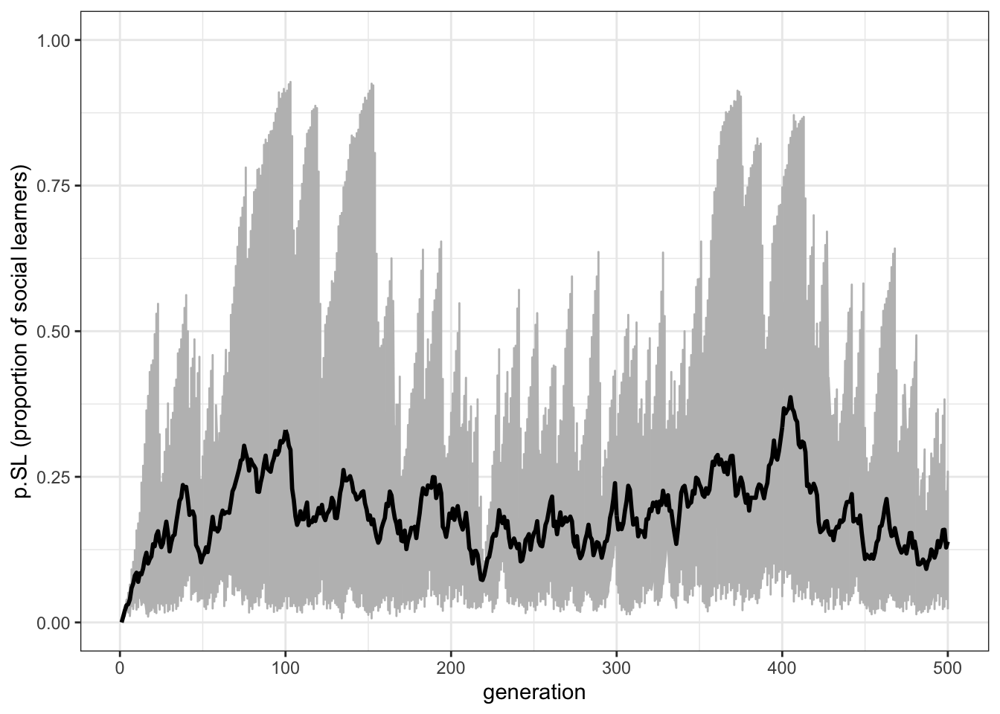
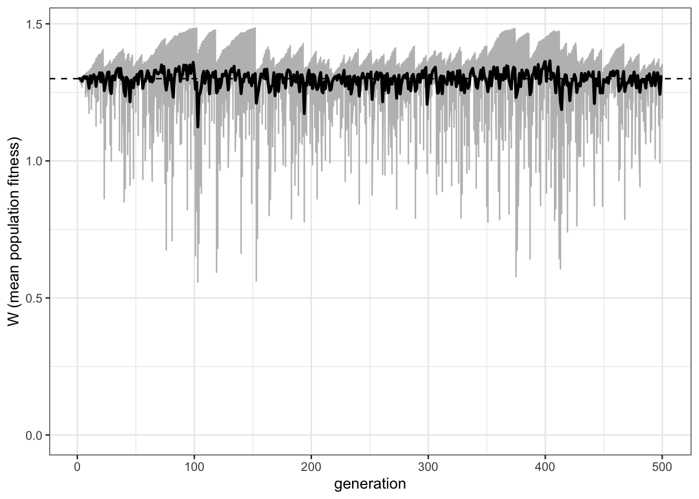
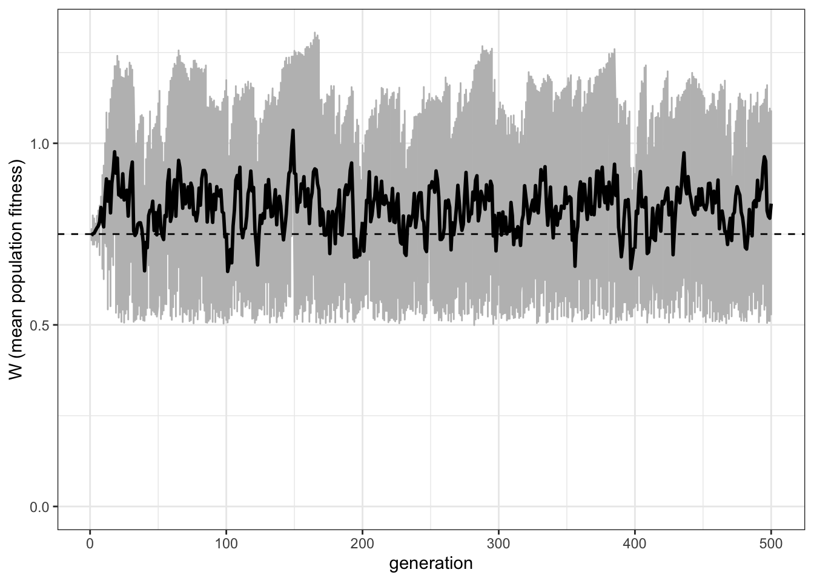
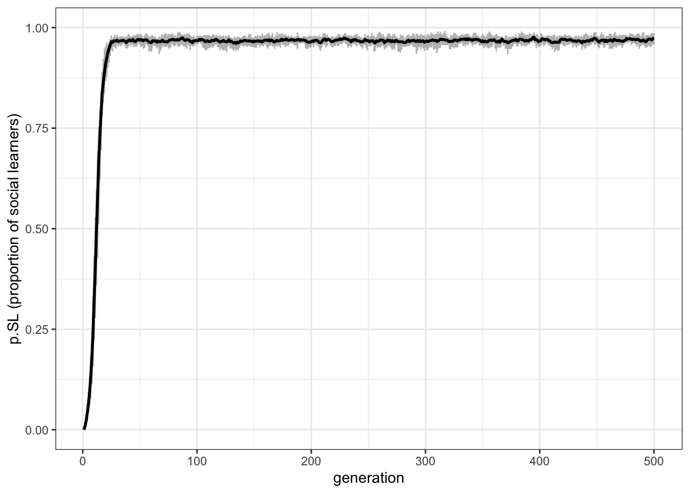
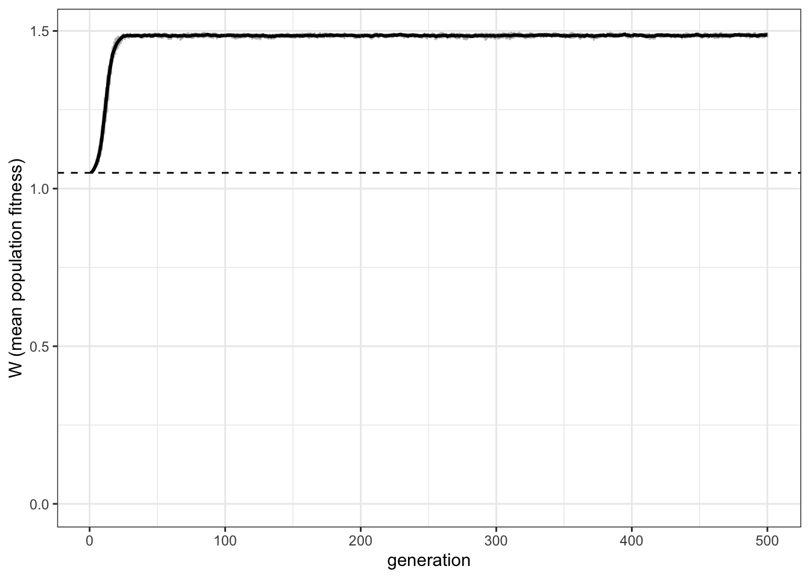

8 Rogers’ Paradox
The previous chapters all concerned cultural evolutionary dynamics: how different biases and transmission pathways affect the frequency of cultural traits in a population over time. Equally important, though, is to step back and consider where these biases and pathways came from in the first place. That is, we need to also consider the evolution of culture, and the evolution of cultural evolution.
The most basic question we can ask here is why a capacity for social learning (learning from others) evolved, relative to individual learning (learning directly from the environment, on one’s own). An intuitive answer to this question is that social learning is less costly than individual learning. Imagine trying out different foods, some of which may be poisonous. One could try each one, and see if they make you ill. A less risky strategy would be to observe one’s neighbour, and eat what they are eating. Unless they look sickly all the time, this will likely lead to a palatable (and evolutionarily adaptive) choice. Consequently, social learning should increase the mean adaptation of a population.
However, this intuition can be misleading. This was shown in 1988 by Alan Rogers in a now-classic model of the evolution of social learning (Rogers (1988)). This model is often called “Rogers’ paradox”, because it shows that under certain conditions, social learning does not lead to increased adaptation, even when it is less costly than individual learning. More precisely, the mean fitness of a population containing social learners does not exceed the mean fitness of a population composed entirely of individual learners. Here we will recapitulate Rogers’ mathematical model in an individual-based simulation, to see when and why this counter-intuitive result holds.
In Rogers’ model there are \(N\) individuals. Each individual has a fixed learning strategy: they are either an individual learner, or a social learner. Each individual also exhibits a behaviour, which we will represent with an integer (e.g. ‘5’, or ‘32’). There is also an environmental state, \(E\), which is also represented with an integer. When an individual’s behaviour matches the environment, they receive increased fitness, compared to when it does not match. A match might represent ‘palatable food’, while a mismatch might represent ‘poisonous food’.
In each generation, individual learners directly sample the environment, and have a probability \(p\) of acquiring the ‘correct’, adaptive behaviour that matches the environment (and therefore a probability \(1-p\) of adopting the incorrect, maladaptive behaviour). Social learners choose a member of the previous generation at random and copy their behaviour, just like for unbiased transmission considered in Chapter 1.
Unlike previous models, we are interested here not in the behaviours or traits, but in how the learning strategies evolve over time. We therefore want to track the proportion of social learners in the population, which we call \(p.SL\) (with \(1-p.SL\) being the proportion of individual learners). We assume these strategies are inherited (perhaps genetically, possibly culturally) from parent to offspring, and are affected by the fitness of the bearers of the strategies. Hence we need to specify fitness parameters.
Each individual starts with a baseline fitness, \(w\). This is typically set at 1, to avoid tricky-to-handle negative fitnesses. Individuals who have behaviour that matches the environment receive a fitness boost of \(+b\). Individuals who have behaviour that does not match the environment receive a fitness penalty of \(-b\). Explicit in the above verbal outline is that social learning is less costly than individual learning. Therefore, individual learners receive a fitness cost of \(-b*c\), and social learners receive a fitness cost of \(-b*s\), where \(c>s\). For simplicity, we can set \(s=0\) (social learning is free) and set \(c>0\), so we only have to change one parameter.
The fitness of each individual is then totted up based on the above, and the next generation is created. Each individual reproduces in proportion to the fitness of their strategy, relative to other strategies.
We also assume some mutation during reproduction. With probability \(mu\), the new individual ‘mutates’ to the other learning strategy. Because we are interested here in how social learning evolves from individual learning, we start with a first generation entirely made up of individual learners. Social learning then appears from the second generation onwards via mutation.
Finally, Rogers was interested in the effect of environmental change. Each generation, there is a probability \(u\) of the environment changing to a new state. In Rogers’ original model, the environment flipped between the same two states, back and forth. However, this is problematic when environmental change is very fast, because an individual with out-dated behaviour can receive a fitness benefit if the environment flips back to the previous state. Hence we assume that when environments change, they change to a new value never previously experienced by any individual.
This is a complex model but let’s go step by step. First we create and initialise tibbles to store the output and the population of individuals, just like in previous chapters. The output here needs to be big enough to store data from \(r_max\) runs and \(t_max\) generations, like before. We then need to create NA placeholders for \(p.SL\) (the proportion of social learners) and \(W\) (the mean population fitness). The population dataframe stores the characteristics of the individuals: learning strategy (‘individual’ or ‘social’), behaviour (initially all NA) and fitness (initially all NA). Finally, we initialise the environment \(E\) at zero, which will subsequently increment.
library(tidyverse)
set.seed(111)
N <- 100
r_max <- 1
t_max <- 10
output <- tibble(generation = rep(1:t_max, r_max), run = as.factor(rep(1:r_max, each = t_max)), p.SL = as.numeric(rep(NA, t_max * r_max)), W = as.numeric(rep(NA, t_max * r_max)))
population <- tibble(learning = rep("individual", N), behaviour = rep(NA, N), fitness = rep(NA, N))
E <- 0Now let’s go through each event that happens during a single generation. Later we will put it all inside a loop. It’s useful to write out the events that we need: 1. Social learning 2. Individual learning 3. Calculate fitnesses 4. Store population characteristics in output tibble 5. Reproduction 6. Potential environmental change
First, social learning. The following code picks random individuals from the previous population tibble (which we have yet to create, but will do later), to put into the social learner individuals in the current population tibble. This is similar to what we did in the first chapter. It only does this if there is at least one social learner. As noted above, we start in the first generation with all individual learners and no social learners, so this will not be fulfilled until the second generation. For now, nothing happens.
if (sum(population$learning == "social") > 0) {
population$behaviour[population$learning == "social"] <- sample(previous_population$behaviour, sum(population$learning == "social"), replace = TRUE)
}The following code implements individual learning. This does apply to the first generation. We first create a vector of TRUE and FALSE values dependent on \(p\), the probability of individual learning resulting in a correct match with the environment. With this probability, individual learners have their behaviour set to the correct \(E\) value. Otherwise, they are given the incorrect behaviour \(E-1\). Note the use of the ! before \(learn_correct\) to give a match when this vector is FALSE (i.e. they do not learn the correct behaviour). Run this and check that the behaviour column of the population tibble changes.
p <- 0.8
learn_correct <- sample(c(TRUE, FALSE), N, prob = c(p, 1 - p), replace = TRUE)
population$behaviour[learn_correct & population$learning == "individual"] <- E
population$behaviour[!learn_correct & population$learning == "individual"] <- E - 1Now we obtain the fitnesses for each individual. First we give everyone the baseline fitness, \(w\). Then we add or subtract \(b\), based on whether the individual has the correct or incorrect behaviour. Finally we impose costs, which are different for social and individual learners. Run this and check that the fitness column of the population tibble changes.
w <- 1
b <- 0.5
s <- 0
c <- 0.9
population$fitness <- w # baseline fitness
# for individuals with behaviour matched to the environment, add b
population$fitness[population$behaviour == E] <- population$fitness[population$behaviour == E] + b
# for individuals with behaviour not matched to the environment, subtract b
population$fitness[population$behaviour != E] <- population$fitness[population$behaviour != E] - b
# impose cost b*c on individual learners
population$fitness[population$learning == "individual"] <- population$fitness[population$learning == "individual"] - b*c
# impose cost b*s on social learners
population$fitness[population$learning == "social"] <- population$fitness[population$learning == "social"] - b*s The fourth stage is recording the resulting data into the output tibble. Ultimately this will be put into a position indexed by a generation (\(t\)) loop and a run (\(r\)) loop, but here we create dummy \(t\) and \(r\) values for illustration. First we calculate \(p.SL\) as the number of social learners divided by the total population size. Then we calculate \(W\), the mean fitness in the entire population. All of these are done with the standard R mean command.
t <- 1
r <- 1
output[output$generation == t & output$run == r, ]$p.SL <- mean(population$learning == "social")
output[output$generation == t & output$run == r, ]$W <- mean(population$fitness)The fifth stage is reproduction. Here we put the current population tibble into a new tibble, called previous_population, as we have done before. This acts as both a record to now calculate fitnesses, as well as a source of demonstrators for the social learning stage we covered above. After doing this, we reset the behaviour and fitness of the current population. We then over-write the learning strategies based on fitness.
First we get \(fitness_IL\), the fitness of individual learners relative to the fitness of the entire population (assuming there are any individual learners, otherwise we set this to zero). This then serves as the probability of setting \(produce_IL\) to TRUE. We do something similar with \(mutation\), denoting the probability of an individual mutating their learning strategy. Finally, we have four statements for all combinations of inherited learning strategy and mutation: if an individual inherits an individual learning strategy and does not mutate, they are an individual learner; if they inherit a social learning strategy and do not mutate, they are a social learner; if they inherit individual learning and mutate, they are a social learner; and if they inherit social learning and mutate, they are an individual learner.
mu <- 0.1
previous_population <- population
population$behaviour <- NA
population$fitness <- NA
# probability of individual learning in new generation (population) is proportional to the relative fitness of individual learners in the previous_population
# relative fitness of individual learners (if there are any)
if (sum(previous_population$learning == "individual") > 0) {
fitness_IL <- sum(previous_population$fitness[previous_population$learning == "individual"]) / sum(previous_population$fitness)
} else {
fitness_IL <- 0
}
produce_IL <- sample(c(TRUE, FALSE), N, prob = c(fitness_IL, 1 - fitness_IL), replace = TRUE)
# also add mutation, chance of switching learning types
mutation <- sample(c(TRUE, FALSE), N, prob = c(mu, 1 - mu), replace = TRUE)
# if parent is an individual learner and no mutation, then they're an ind learner
population$learning[produce_IL & !mutation] <- "individual"
# if parent is a social learner and no mutation, then they're a social learner
population$learning[!produce_IL & !mutation] <- "social"
# if parent is an individual learner plus mutation, then they're a social learner
population$learning[produce_IL & mutation] <- "social"
# if parent is a social learner plus mutation, then they're an ind learner
population$learning[!produce_IL & mutation] <- "individual" The final stage is the easiest. With probability \(u\), we increment the environmental state \(E\) by one. Otherwise, it stays as it is. To do this we pick a random number between 0 and 1 using the \(runif\) command, and if \(u\) exceeds this, we increment \(E\).
That covers the six stages that occur in each generation. We can now put them all together into a loop tracking runs, and a loop tracking generations. We can also put all this inside a function. This should all be familiar from previous chapters. Note that we’ve added some explanatory comments to explain what’s happening, and number the different stages. We also add a parameter check at the start, to make sure that we don’t get negative fitnesses. We ends with the output tibble, which constitutes the data outputted from the whole simulation, and we set some of the parameters (\(w\), \(b\) and \(s\)) to default values. The others we force the user to specify.
rogers_model <- function(N, t_max, r_max, w = 1, b = 0.5, c, s = 0, mu, p, u) {
# check parameters, to avoid negative fitnesses
if (b*(1+c) > 1 || b*(1+s) > 1) {
stop("Invalid parameter values: ensure b*(1+c) < 1 and b*(1+s) < 1")
}
# create output tibble
# p.SL is the proportion of social learners in the population and W is the population mean fitness
output <- tibble(generation = rep(1:t_max, r_max), run = as.factor(rep(1:r_max, each = t_max)), p.SL = as.numeric(rep(NA, t_max * r_max)), W = as.numeric(rep(NA, t_max * r_max)))
for (r in 1:r_max) {
# create a population of individuals
# learning type is 'individual' or 'social' (initially all 'individual')
# behaviour is indexed by an integer, which may or may not match the environment
# fitness is the individual's fitness, given their learning type, behaviour and the environment
population <- tibble(learning = rep("individual", N), behaviour = rep(NA, N), fitness = rep(NA, N))
# initialise the environment
E <- 0
for (t in 1:t_max) {
# 1. social learners copy the behaviour of a randomly chosen member of the previous generation
if (sum(population$learning == "social") > 0) {
population$behaviour[population$learning == "social"] <- sample(previous_population$behaviour, sum(population$learning == "social"), replace = TRUE)
}
# 2. individual learners learn the correct behaviour (E) with probability p
# otherwise they learn the incorrect behaviour (E - 1)
learn_correct <- sample(c(TRUE, FALSE), N, prob = c(p, 1 - p), replace = TRUE)
population$behaviour[learn_correct & population$learning == "individual"] <- E
population$behaviour[!learn_correct & population$learning == "individual"] <- E - 1
# 3. get fitnesses
population$fitness <- w # baseline fitness
# for individuals with behaviour matched to the environment, add b
population$fitness[population$behaviour == E] <- population$fitness[population$behaviour == E] + b
# for individuals with behaviour not matched to the environment, subtract b
population$fitness[population$behaviour != E] <- population$fitness[population$behaviour != E] - b
# impose cost b*c on individual learners
population$fitness[population$learning == "individual"] <- population$fitness[population$learning == "individual"] - b*c
# impose cost b*s on social learners
population$fitness[population$learning == "social"] <- population$fitness[population$learning == "social"] - b*s
# 4. store population characteristics in output
output[output$generation == t & output$run == r, ]$p.SL <- mean(population$learning == "social")
output[output$generation == t & output$run == r, ]$W <- mean(population$fitness)
# 5. reproduction
previous_population <- population
population$behaviour <- NA
population$fitness <- NA
# probability of individual learning in new generation (population) is proportional to the relative fitness of individual learners in the previous_population
# relative fitness of individual learners (if there are any)
if (sum(previous_population$learning == "individual") > 0) {
fitness_IL <- sum(previous_population$fitness[previous_population$learning == "individual"]) / sum(previous_population$fitness)
} else {
fitness_IL <- 0
}
produce_IL <- sample(c(TRUE, FALSE), N, prob = c(fitness_IL, 1 - fitness_IL), replace = TRUE)
# also add mutation, chance of switching learning types
mutation <- sample(c(TRUE, FALSE), N, prob = c(mu, 1 - mu), replace = TRUE)
# if parent is an individual learner and no mutation, then they're an ind learner
population$learning[produce_IL & !mutation] <- "individual"
# if parent is a social learner and no mutation, then they're a social learner
population$learning[!produce_IL & !mutation] <- "social"
# if parent is an individual learner plus mutation, then they're a social learner
population$learning[produce_IL & mutation] <- "social"
# if parent is a social learner plus mutation, then they're an ind learner
population$learning[!produce_IL & mutation] <- "individual"
# 6. potential environmental change
# increment the environmental state with probability u
if (runif(1) < u) E <- E + 1
}
}
output
}Now we can run the simulation for 10 runs, and 100 generations.
You can inspect the data_model tibble, but so much data is hard to make sense of. Let’s write plotting functions like in previous chapters. First we can plot \(p.SL\), the frequency of social learners. This is similar to the plots in previous chapters, but instead of plotting each run as a different colour, we plot them in grey, to show the range across runs as well as the mean.
plot_p.SL <- function(data_model) {
ggplot(data = data_model, aes(y = p.SL, x = generation)) +
geom_line(col = "grey") +
stat_summary(fun.y = mean, geom = "line", size = 1) +
ylim(c(0, 1)) +
theme_bw() +
labs(y = "p.SL (proportion of social learners)")
}
plot_p.SL(data_model)## Warning: `fun.y` is deprecated. Use `fun` instead.
Here we can see that, for these parameter values, the mean proportion of social learners fluctuates around 0.5. However, each run is quite erratic, with a large spread. More important for our understanding of Rogers’ paradox, however, is the mean fitness of the population, and how this compares with a population entirely composed of individual learners. Consequently, we need to plot the mean population fitness over time. This is \(W\) in the output of the rogers_model function. The function below plots this, along with a dotted line denoting the fitness of an individual learner, which by extension will be the same as the mean fitness of a population entirely composed of individual learners.
plot_W <- function(data_model, w=1, b=0.5, c, p) {
ggplot(data = data_model, aes(y = W, x = generation)) +
geom_line(col = "grey") +
stat_summary(fun.y = mean, geom = "line", size = 1) +
geom_hline(yintercept = w + b*(2*p - c - 1), linetype = 2) +
ylim(c(0, NA)) +
theme_bw() +
labs(y = "W (mean population fitness)")
}
plot_W(data_model, c = 0.9, p = 1)## Warning: `fun.y` is deprecated. Use `fun` instead.
This is Rogers’ paradox. Even though social learning is less costly than individual learning (i.e. \(s < c\)), our population of roughly 50% social learners never exceeds the dotted line that indicates the fitness of a population of individual learners. Social learning does not increase adaptation. This also runs counter to the common claim that culture - with social learning at its heart - has been a key driver of our species’ ecological success.
The reason for this result is that social learning is frequency-dependent in a changing environment. Individual learners undergo costly individual learning and discover the correct behaviour, initially doing well. Social learners then copy that behaviour, but at lower cost. Social learners therefore then do better than, and outcompete, individual learners. But when the environment changes, the social learners do badly, because they are left copying outdated behaviour. Individual learners then do better, because they can detect the new environmental state. Individual learners increase in frequency, and the cycle continues. Eventually they reach an equilibrium at which the frequency of social and individual learners is the same. but by definition, this equilibrium must have the same mean fitness as a population entirely composed of individual learners. Hence, the ‘paradox’.
To explore this further, we can alter the parameters. First, we can reduce the cost of individual learning, from \(c=0.9\) to \(c=0.4\).
data_model <- rogers_model(N = 1000, t_max = 500, r_max = 10, c = 0.4, mu = 0.01, p = 1, u = 0.2)
plot_p.SL(data_model)## Warning: `fun.y` is deprecated. Use `fun` instead.
## Warning: `fun.y` is deprecated. Use `fun` instead.
As we might expect, this reduces the proportion of social learners, by giving individual learners less of a penalty for doing their individual learning. Also as expected, the paradox remains. In fact it is even more obvious, given that there are many more individual learners.
We can also reduce the accuracy of individual learning, reducing \(p\) from 1 to 0.8.
data_model <- rogers_model(N = 1000, t_max = 500, r_max = 10, c = 0.9, mu = 0.01, p = 0.7, u = 0.2)
plot_p.SL(data_model)## Warning: `fun.y` is deprecated. Use `fun` instead.
## Warning: `fun.y` is deprecated. Use `fun` instead.
Now there are a majority of social learners. Yet the paradox remains: the mostly social learners still do not really exceed the pure individual learning fitness line.
If our explanation above is correct, then making the environment constant should remove the paradox. If the environment stays the same, then behaviour can never be outdated, and individual learners never regain the upper hand. Setting \(u=0\) shows this.
data_model <- rogers_model(N = 1000, t_max = 500, r_max = 10, c = 0.9, mu = 0.01, p = 1, u = 0.0)
plot_p.SL(data_model)## Warning: `fun.y` is deprecated. Use `fun` instead.
## Warning: `fun.y` is deprecated. Use `fun` instead.
Now the paradox has disappeared: social learners clearly outperform the individual learners after the latter have gone to the trouble of discovering the correct behaviour, and the social learners have higher mean fitness than the individual learning dotted line. This is just as we would expect. Rogers’ paradox crucially depends on a changing environment. However, nature rarely provides a constant environment. Food sources change location, technology accumulates, languages diverge, and climates change.
8.1 Summary of the model
Rogers’ model is obviously a gross simplification of reality. However, as discussed in earlier chapters, realism is often not the aim of modelling. Models - even simple and grossly unrealistic ones - force us to think through assumptions, and challenge verbal theorising. Rogers’ model is a good example of this. Even though it sounds reasonable that social learning should increase the mean fitness, or adaptation, of a population, in this simple model with these assumptions it does not. We saw one situation in which social learning does increase mean fitness: when environments do not change. This, however, is not very plausible. Environments always change. We therefore need to examine the other assumptions of Rogers’ model. We will do this in the next chapter.
8.2 Further reading
An early example of the claim that social learning is adaptive because it reduces the costs of learning can be found in Boyd and Richerson (1985). Rogers (1988) then challenged this claim, as we have seen in this chapter. In the next chapter we will consider subsequent models that have examined ‘solutions’ to Rogers’ paradox.
References
Boyd, Robert, and Peter J. Richerson. 1985. Culture and the Evolutionary Process. Culture and the Evolutionary Process. Chicago, IL, US: University of Chicago Press.
Rogers, A. R. 1988. “Does Biology Constrain Culture?” American Anthropologist 90 (4): 819–31.